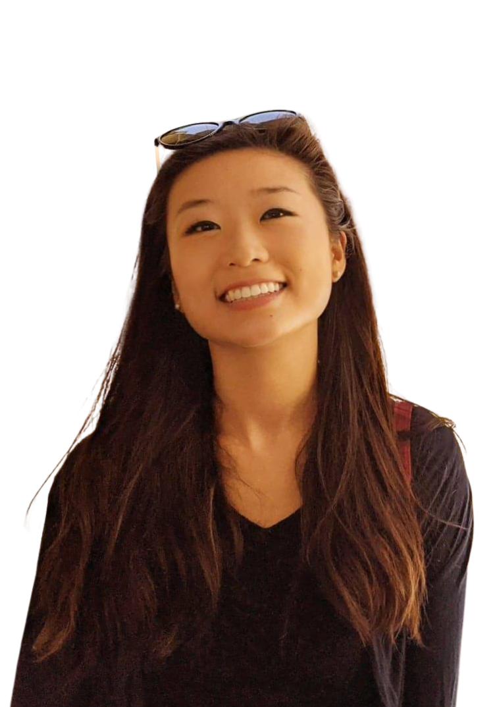

I’m Esther, a product designer based in Boston.
I care about the parts of design that don’t always show up on screen: how problems get framed, how decisions get made, and how things hold up once real people start using them.
Side project · AI-first hackathon
48-hour hackathon · 2025
Focus Gym
A coaching surface that helps you turn vague intentions into a real session, without the productivity-app dread.
What changed in this v2, annotated
Hero (point 1)
Avatar is now ~56px, sitting inline with your name as a who-am-I row. The H1 carries positioning ("AI-assisted tools for education"), that's the recruiter's 4-second answer to "what kind of designer." Your blurb sits under, smaller, where it belongs.
Audit → redesign framing (points 2–4)
You're right, I retract the "lying about structure" critique. The arrow holds. To reinforce the arc instead of weakening it, the eyebrow on cards 02 + 03 now reads "Informed by the audit" so the connection is explicit, and the UX Audit card stays tall as the headline of the trio. Focus Gym is then separated by a real divider ("Side project · AI-first hackathon"), visually distinct, doesn't feel exiled.
"Do I need a positioning H1?" (point 5)
Honest answer: not strictly required, but it'd help. The hero you have today says only where you are ("Boston") and that you care about non-screen things, but it doesn't say what you actually do . A recruiter scanning your page in 4 seconds before context-switching wants to know if you're an AI designer, a research-leaning designer, an enterprise UX person, etc. Adding it costs you a line of copy and earns you better signal. Keep it short, what you see here is one option.
Card-as-window crops (the main ask)
Cards 02 and 03 no longer show "title above, tiny screenshot below." Instead the cropped artwork is the card body, title sits in a meta strip at the top, image fills the rest. Crops are tight enough you can read one decision per card: a single scoring tile for Writing Solutions, one pinned answer + question + AI feedback for Freehand Grader. No abstract shapes needed, these are real UI fragments at readable scale.
Wordmark (point 6)
Top-left is now just "Esther Nam •", confident, no role label crammed underneath. The "product designer / Boston" line lives in the hero where it has room to breathe.
Award badge
Trophy emoji is gone. Replaced with a typeset pill that reads "AWARD · Best Solution for User Impact", same information, more grown-up.